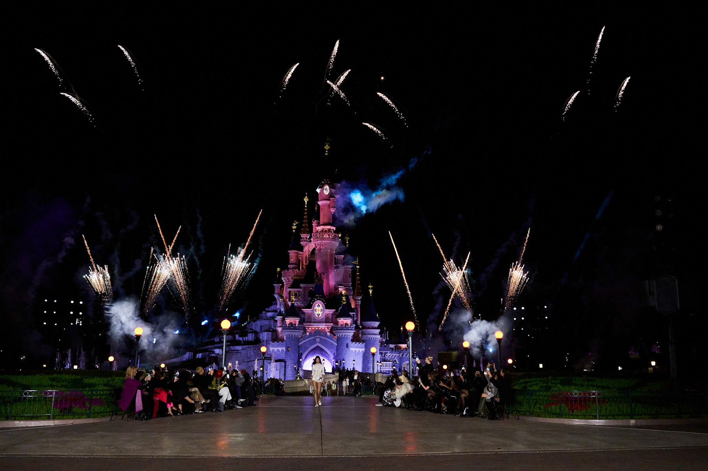
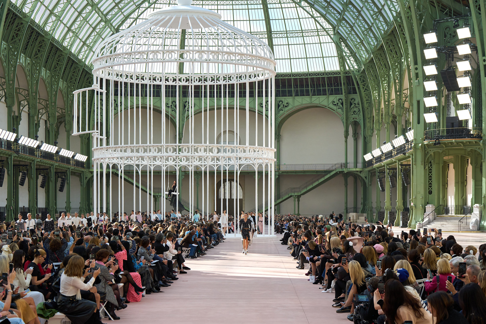
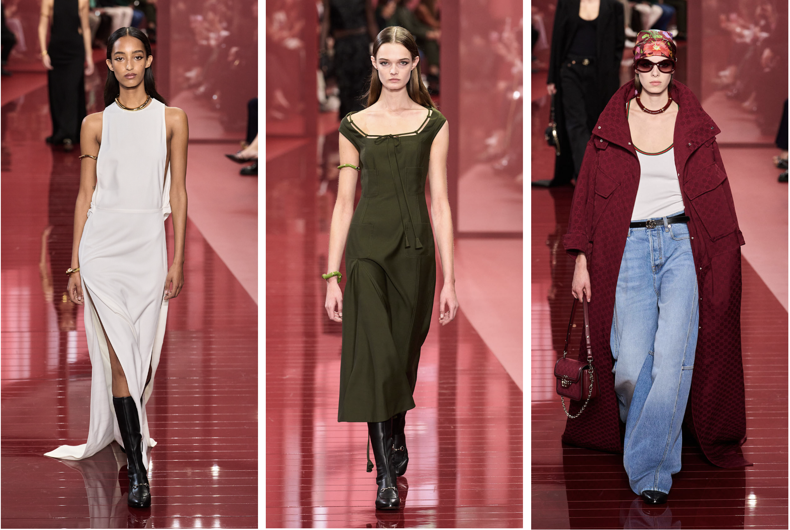
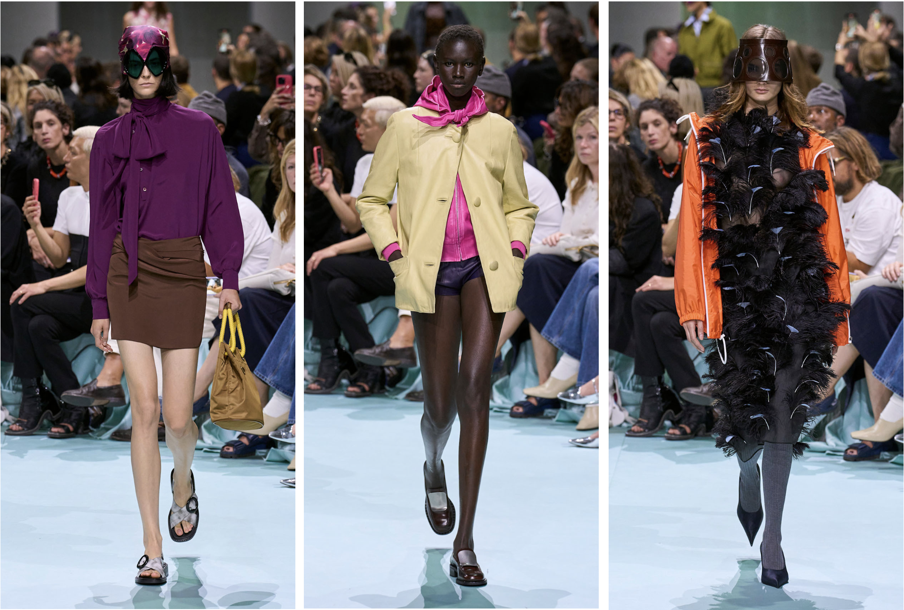
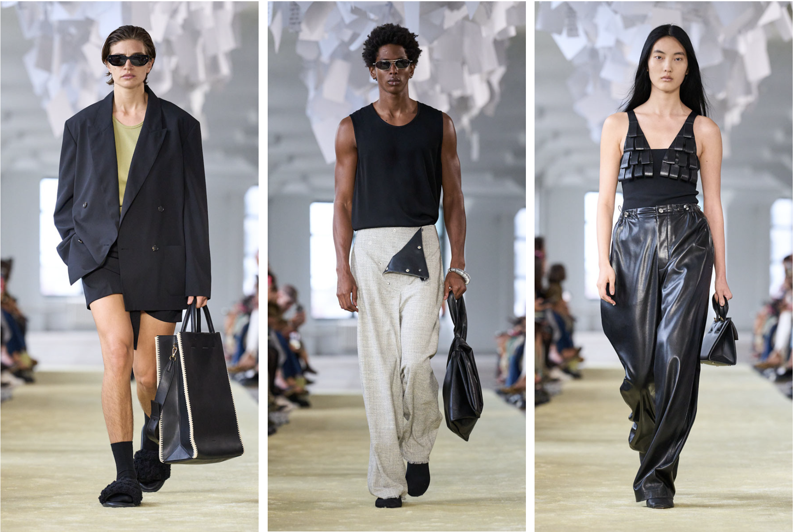
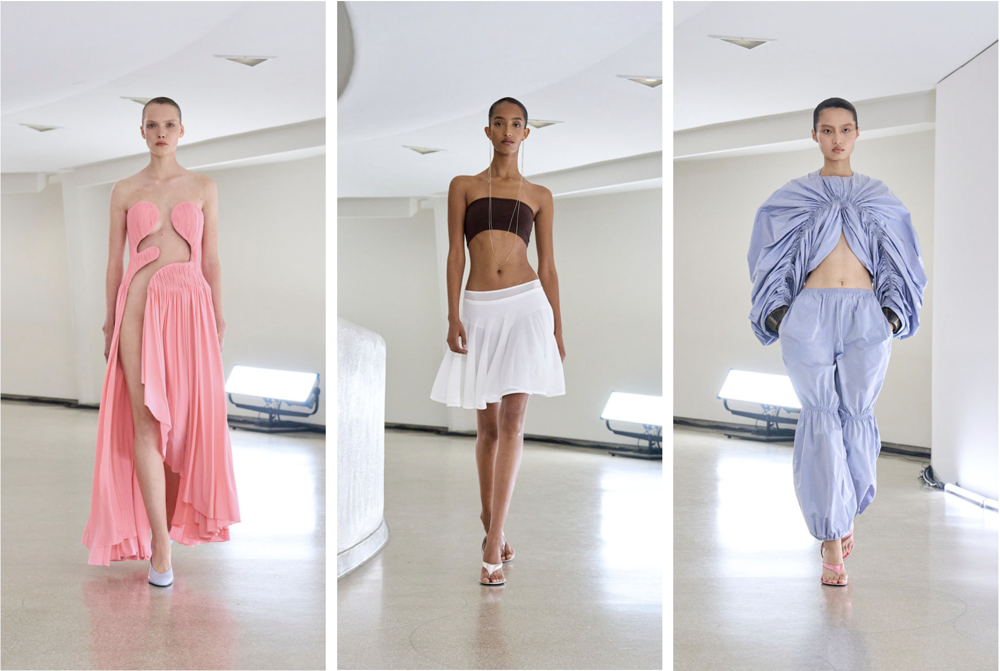
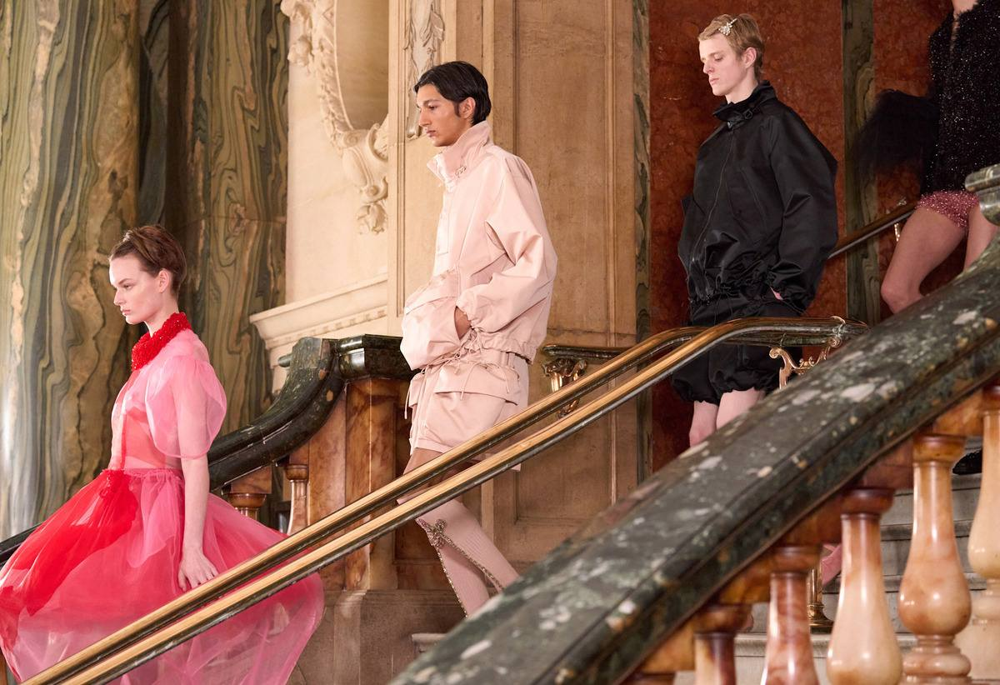
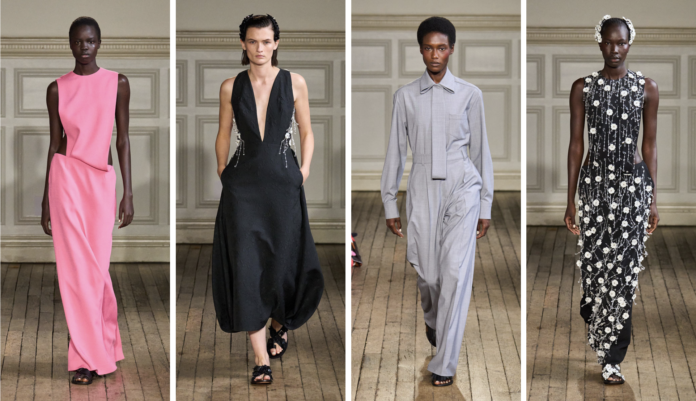

Fashion Week 24/25 spring-summer
Paris | Milan | New York | London | Highlights
Paris
Main themes of Paris Fashion Week:
- Coperni at Disneyland, Paris 
- Chanel at the Grand Palais 
Milan
Milan Fashion Week highlights:
- The Gucci show is dedicated to basic wardrobe items created for real life 
- "The craziest Prada show in recent times," half of fashion critics and fans at home described the spring—summer 2025 show 
New York
New York Fashion Week highlights:
- The anniversary was celebrated by the Nanushka brand, which for the first time held a show as part of the New York fashion show 
- This year, Alaïa decided to visit New York for the first time since 1982, the Guggenheim Museum became the location of the show. 
London
London style for FW24/25:
- Simone Rocha 
- Emilia Wickstead has chosen French photographer Gisele Freund as her muse this season 
Highlights Shows
Most talked-about collections of the season:
- Dior – refined elegance with a modern twist
- Prada – playful minimalism and new shapes
- Gucci – maximalism meets contemporary cool
- Balenciaga – dramatic silhouettes and futuristic vision
- Alexander McQueen – dark romance and theatrical edge